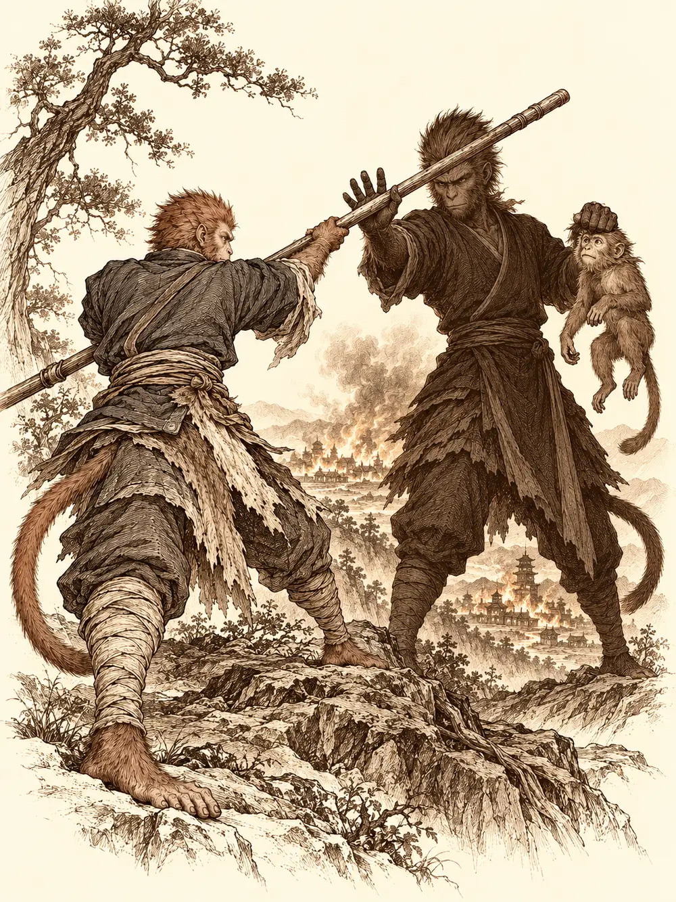

Capítulo 98
Un lío en el bosque
Libro VI · La Puerta Negra
Ikari llevaba días con la nariz metida en el libro que le había dado Calista. Desde que volvió de las ruinas donde los sectarios habían masacrado a parte de su gente, el tanuki apenas hablaba de otra cosa. En la cubierta había un caballo y un buey, y estaba seguro de que eran los guardianes de la Puerta Negra. Lo que había conseguido descifrar dentro era claro: aquellas puertas tenían que permanecer cerradas.
Banzo había montado guardia junto a ellas varios días después de la última expedición. No había visto moverse nada, salvo una cosa que no se le iba de la cabeza: las armas de las dos estatuas, que habían quedado apuntando hacia fuera, habían bajado otro poco.
"¿Será una cuenta atrás?", preguntó alguien.
Nadie lo sabía. Si se planeaba una ofensiva hacia el Sur, quizá habría que abrirla; si no, convenía prepararse para defenderse. Guxi pidió a Ikari un extracto de lo leído y lo envió al shogunato ese mismo día.
En la sala había alguien a quien muchos no veían desde la muerte de Sirth. Sun Gukon había vuelto de su montaña, pero no parecía el mismo. Ya no llevaba oro, ni capa, ni plumas; vestía una sotana azul y un faldón de piel. Les contó que la vida le había dado varios golpes seguidos. No había podido proteger a su amigo. Katari le había reñido por abandonar la bendición del tigre, y con razón. Y en su propio monte, mientras se daba aires de rey, había olvidado a sus primeros súbditos. Había decidido hacer caso al monje que una vez le dijo que bajara de las nubes. El templo quedaba en manos de ese monje; la montaña, al cuidado de un grupo de animales, uno de cada especie. Y él quería quedarse más cerca de la base, ocuparse de Shizuka y de su hermano en memoria de Sirth.
Entregó a Guxi una solicitud por escrito: quería una audiencia con el shogun para pedirle perdón en público por la bendición perdida, y aceptaría el castigo que le impusieran.
Banzo lo miró de arriba abajo, se le acercó y lo olfateó.
"No hueles a sardina. Tú eres el original, ¿verdad?".
La primera vez que lo vio, en un trono, era un macaco disfrazado. Sun se llevó la mano al pecho y le hizo una reverencia para darle las gracias por ayudar a su gente, y Banzo se quedó desconcertado: las historias que había oído no se parecían en nada al hombre que tenía delante.
Arwen llevaba semanas en la base y no daba señales de querer volver a ninguna parte. Rompía cosas, mordía, ensuciaba el suelo y, en aquel momento, arañaba el borde de la mesa intentando subirse. Cuando lo consiguió se rascó la oreja con el pie. Sun preguntó si Danifae había adoptado una mascota, y la niña se tiró al suelo a cuatro patas y echó a correr alrededor de la mesa a toda velocidad, hasta estrellarse de cabeza contra la drow.
De entre las ropas de Danifae cayó algo. Una esfera de piedra, de tierra apretada, rodó por el suelo y se detuvo a los pies de Arwen. A la niña se le iluminaron los ojos.
"¡Pelota!".
La agarró y salió corriendo. Danifae desenfundó sus dos espadas cortas y fue tras ella. Sun se interpuso con las manos abiertas.
"Dani, Dani. Violencia no. Es una niña".
Los ojos de la drow se volvieron completamente rojos.
"Será mejor que te apartes, amigo mío".
Algo intentó doblarle la voluntad al monje, y él lo notó. Le tomó despacio las muñecas y le bajó las armas, dejándose empujar un poco para no forcejear. Que la persiguiera si quería, pero sin dagas. Danifae se desvaneció delante de él y reapareció frente a la niña, que no frenó y se la llevó por delante contra la pared. Cuando la drow la agarró del pie, Arwen la miró con unos ojos redondos e inocentes.
"¿Dónde está la pelota?".
La niña tragó.
Hubo un silencio, y después un eructo. Danifae siguió persiguiéndola con la espada corta. Ikari sacó un trozo de carne de conejo, sobras de su oficio de peletero, y la llamó como a un cachorro. Arwen saltó sobre él y empezó a jugar con el tanuki a mordiscos, como hacía con Tip y Top.
Guxi tenía un encargo pendiente. Le faltaba una joya, una pequeña esmeralda que un druida de un bosque cercano había preparado para él. Aquel hombre había trabajado tiempo atrás con el shogunato y en palacio querían saber si seguía vivo y si podía ayudarlos en la guerra. Confió la recogida de la piedra a Ikari, porque Danifae solo tenía ojos para la niña y de Sun todavía no se fiaba, y les dio un último consejo.
"No toméis lo que os ofrezca".
El camino era de medio día. En algún momento Danifae se quedó a la altura de Sun, que caminaba apartado, y le tocó el costado con un dedo.
"Últimamente he oído que tus compañeros no están muy contentos contigo".
Sun le habló de la bendición y de los guantes que nadie le había advertido que no se quitara. Ella le acarició el hombro y le dio la razón: si no se lo habían explicado, no era culpa suya. Luego bajó la voz.
"Creo que más de uno quiere cortarte la cabeza".
Él se llevó la mano al cuello. Danifae no recordaba el nombre de quién, una chica, no importaba. Le dio dos palmadas y se adelantó, dejándolo atrás con la mano en la garganta.
La cabaña estaba en lo alto de un árbol, junto a un lago grande y bonito. Por la puerta abierta salía humo y se oía a alguien reírse solo. Dentro, el aire olía a hierbas que ninguno había visto nunca, y en cada mesa había cuencos, pipas y sustancias de colores. En una silla, sin moverse, estaba un anciano con los ojos entornados.
"Me estoy imaginando un mono", dijo. "Y una niña. Y un mapache feo".
Arwen olfateaba el suelo a cuatro patas, indiferente al humo, y encontró una galleta. Abrió la boca. Banzo le ofreció un trozo de pan mucho más grande; Ikari, carne. La niña dudó entre todo. Mientras miraba el pan del goliat, el tanuki le cambió la galleta por la carne. La niña señaló al viejo y aseguró que lo conocía.
El druida se llamaba Gambón. Recordaba a Guxi, el de los cacharros y los papeles, y había trabajado con un shogun, aunque creía que no con el de ahora. Para saber si de verdad debía ayudarlos, propuso una prueba.
Al druida le asomaba la esmeralda del bolsillo. Danifae se acercó pasando el dedo por el polvo de la mesa y se la quitó con un movimiento tan torpe que todos lo vieron. Sonrió, la enseñó y, ante las miradas de los demás, se la entregó a Ikari. Él se la guardó.
Gambón tenía un libro abierto sobre las rodillas. En una de sus páginas había un dibujo que debía de ser Otakemaru, con dos palabras subrayadas en rojo varias veces: muy malo.
"Juega con los miedos de la gente. Mi trabajo es que los cazadores sean capaces de enfrentarse a los suyos".
Encendió una pipa del tamaño de un brazo y el humo lo llenó todo.
Ikari volvió a la base de Sho después de un largo día fuera y la encontró vacía. Ni los cazadores, ni los yokai de la casa. El polvo cubría las mesas como si allí no hubiera vivido nadie en meses, y el portal estaba apagado. Por la calle no había pasado nadie. En su memoria se abrió un recuerdo que no tenía: una batalla decisiva en la que no fue lo bastante fuerte, o no lo dio todo, y en la que murieron todos los que iban con él. Fue al cementerio. Allí estaban las tumbas de todas las personas que había conocido, una detrás de otra. Junto a ellas lo esperaba su sombra.

"Es culpa tuya, Ikari. Por tu debilidad ya no nos queda nadie".
El tanuki se sentó entre las lápidas. No era la primera vez que cargaba con una culpa así y sabía que la única forma de avanzar era aceptar los errores y trabajar en ellos. La visión lo llevó más lejos, por un Kuroto deshabitado y por otras tierras igual de vacías, hasta que entendió que su destino era vagar solo. Ya había vivido en esa oscuridad, atrapado en el Shadowfell. Sabía lo que le esperaba. Y la abrazó sin darle la mano a la sombra.
Sun subía su montaña cuando miró atrás y vio la ciudad en llamas. Quiso correr a salvar a la gente, pero se descubrió sonriendo. En su bastón había sangre, y sabía de quién. Una sombra con su forma le cortó el paso.
"Nos han rechazado todos porque eres débil. Conmigo al mando, ni el shogun ni Otakemaru nos detendrán. ¿Para qué ser mejor cuando puedes ser el mejor?".
"No pretendo ser el mejor. Pretendo ser mejor de lo que era".
Le lanzó un bastonazo y la sombra lo detuvo con la mano. Luego le mostró a un mono de su montaña, uno de los suyos, colgando de sus dedos: Sun aflojaba la presa y la sombra cerraba la mano por él. Se oyó un crujido. Luego, retazos: el monje riendo junto a los cadáveres del shogun y de Rua, proclamado emperador, tirano de Kuroto. Sun cayó de rodillas llorando de rabia. Cada vez que la visión le ofrecía aquello, decía que no.
Banzo bebía solo en una taberna sin tabernero. Se había peleado con Rua y ningún cazador quería verlo. A su alrededor, los espíritus de sus antepasados le repetían que no valía para nada, que su abuelo estaba loco. Una voz le habló dentro de la cabeza con su propio timbre: los espíritus solo se quedan por rencor, dijo, para verlo sufrir. Banzo estrelló la copa contra la pared. Los tatuajes de su pecho se agitaron y fueron borrándose uno a uno, hasta dejar solo el primero, un collar finísimo.
"Conmigo a tu lado podríamos derrotar a Otakemaru y volverían a respetarte".
"No es así como funcionan los amigos. Los amigos se perdonan. El único camino para vencer es estar todos juntos".
Le arrojó una jabalina al cuello y la sombra la apartó. Vivió entonces una vida entera rechazado allá donde iba, y al final, viejo y desorientado, buscó en las montañas nevadas una aldea que ya no recordaba dónde estaba. Se recostó en una piedra. Se le apareció su abuelo y le pidió perdón. La sombra le tendió la mano por última vez, prometiéndole que nunca volvería a estar solo. Banzo no la tomó. La nieve le cubrió la cara.
Arwen tenía tres años. Los pulmones se le llenaban de humo y el bosque ardía. Su madre corría con ella apretada contra el pecho, huyendo de algo que la niña no veía, hasta un árbol enorme cuyas raíces abrió con la palma iluminada. La dejó en el hueco. Las raíces empezaron a cerrarse. Por la rendija, Arwen vio unos ojos rojos como la sangre, unas fauces, y vio a la bestia arrollar a su madre y despedazarla. Extendió los brazos para salir. Las raíces se cerraron. Gritó llamando a su madre hasta quedarse sin voz y, al abrir los ojos, estaba en otro bosque que nunca había visto, rodeada de criaturas que la miraban con curiosidad.
Su sombra le dijo que había sido culpa suya, que la bestia las había seguido porque ella quiso salir a jugar. La niña se tapó las orejas y lloró. La sombra le ofreció la mano: si la aceptaba, no volvería a pasar, ni siquiera perderían a su nueva familia.
"Pero mamá no va a volver".
Tomó la mano. Vivió una vida larga y feliz, con amigos y con alguien que podía ser casi una madre. Ya de joven, le dijo a la sombra que nada de aquello le hacía olvidar lo ocurrido; que podía vivir con ella, pero no ser completamente feliz. Que el pasado no se cambiaba, pero quizá podían evitar que hubiera otra Arwen sufriendo por lo mismo. En su lecho de muerte sintió un roce cálido y sonrió.
"Vuelvo a donde vine".
Lo que vio Danifae no lo supo nadie más. Se arrodilló ante su madre, una matrona que la humillaba por no haber terminado la misión, por no ser como su hermana, por las esferas que siempre estaban a punto de llegar. Danifae bajó la cabeza enseñando los dientes. Pensó que, cuando tuviera las esferas, sería su madre la que se arrodillaría. Una voz dentro de ella le propuso otra cosa: usarlas para desaparecer, para ser libres, para ser felices como esos estúpidos cazadores que compartían momentos. La drow se le acercó al oído.
"Cuando tengamos las esferas no nos hará falta la felicidad. Ni tú".
En el futuro que le mostraron, conseguía las esferas y su madre la encerraba en una mazmorra durante siglos. Al morir, vieja y agotada, oyó a su sombra reprocharle su ambición. Sonrió.
"Pero ella está aquí. Y eso me vale".
Despertaron en la cabaña. Danifae tenía las dos espadas cruzadas sobre la nuca del druida. Arwen, todavía llorando, se le echó encima y la mordió, y entre dos tuvieron que despegarla. La niña quedó sentada sobre la mesa, respirando con dificultad, y entonces vio en su dedo un anillo completamente negro. Intentó morderlo, intentó quitárselo. No salía. Al tocarlo sintió un consuelo parecido al abrazo de su madre.
"Eso es malo", murmuró el druida.
Banzo, rojo de ira, golpeó la pared y le exigió respuestas. Gambón dijo que solo les había enseñado su peor futuro para que supieran cómo evitarlo, que no sabía qué había visto cada uno y que las visiones nunca eran claras para nadie. Alguien intentó agarrarlo de la barba y sus manos atravesaron niebla.
El druida prometió que iría a ayudar al shogun y se esfumó. Arwen se aferró a Sun y no lo soltó. Poco a poco, cada vez que rozaba el anillo, dejaba de llorar. Los demás solo vieron que se iba calmando.
Al salir, Banzo se inclinó hacia Danifae y le susurró que no dejara ni rastro. Ella sacó una vela, sonrió y la dejó caer en el suelo de la cabaña. Mientras se alejaban, parte del bosque empezó a arder.
En la base, Danifae se colocó detrás de Guxi y le apoyó una daga en el cuello. ¿De dónde había sacado a aquel amigo? Guxi, sin moverse, explicó que se lo habían recomendado unos funcionarios del shogun. Ella le dio unas palmadas y se sentó. Ikari le entregó la esmeralda y el artífice hizo un par de incisiones en un anillo, la engastó y se lo dio a la drow, que se lo guardó sonriendo. Guxi repartió cincuenta monedas a cada uno por el trabajo y le confirmó a Banzo que el informe sobre la Puerta Negra había salido esa mañana. El goliat se fue a buscar a Rua.
Arwen miró la bolsa de monedas como si fuera una piedra. Danifae metió la mano para quitársela. Sun protestó: era de la niña, había que enseñarle a usarlo. La drow vació un puñado de monedas y se las tiró a los pies.
"Toma. La mitad para ti".
"No le robes a una niña. Es caer muy bajo".
Ella le acercó la cara hasta casi tocarlo y le preguntó si pensaba obligarla. Sun le ofreció su propia paga a cambio. Al final, Danifae le tiró al monje la bolsa a la cara, con lo que quedaba dentro, y se marchó.
Sun le dio su dinero a Guxi para pagar los desperfectos. Luego se sentó junto a Arwen, que seguía con los ojos hinchados y sin ganas de nada, colocó las monedas sobre la mesa en filas y empezó a explicarle para qué servían. En algún lugar dentro de la niña, la esfera seguía donde había caído, y no parecía tener ninguna intención de salir.